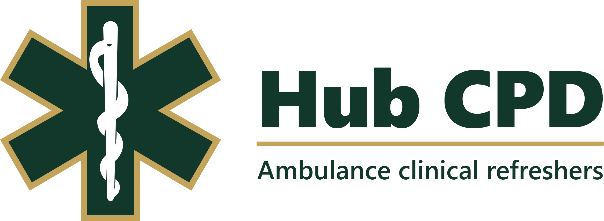

COPD, Type 2 Respiratory Failure and NEWS2
JRCALC Chronic Obstructive Pulmonary Disease · RCP NEWS2

Five key points to remember
Two separate decisions
Oxygen target — JRCALC
Known or suspected COPD: start with 88–92% (or the alert-card range) unless they are critically ill.
This is a treatment decision. It is not NEWS2 Scale 2.
NEWS2 scale — RCP
Use Scale 1 unless type 2 (hypercapnic) failure is already documented: alert card stating type 2 / raised CO2, specialist plan, previous ABG, or Hub special message.
Routinely, look for that record before Scale 2. JRCALC is less absolute than a hard ban, and there can be exceptions — if you use Scale 2 without it, say why at handover.
When Scale 2 may be applied
Apply their record
- Type 2 already confirmed on blood gas
- A hospital doctor, ANP or specialist has already recorded it
- You can see that documentation
The usual role on scene is to apply that record. Scene findings alone are not a reason to start Scale 2.
Do not switch scale because
- They “have COPD”
- They are on home oxygen
- They “look like a retainer”
- You are targeting 88–92%
- The ePR offered Scale 2 when you typed COPD
Same sats, two scores
| 68, COPD, no alert card, 90% on air | Same age, alert card: previous type 2, 90% on 28% Venturi | |
|---|---|---|
| Correct scale | Scale 1 — 90% scores 3. Hypoxia is visible. | Scale 2 — SpO2 0 + oxygen 2. Stops staff chasing sats with high-flow. |
| Wrong habit | Scale 2 scores 90% as 0 and can hide hypoxia. | Scale 1 keeps alarming at 90% and oxygen creeps up. |
A usual SpO2 of 90% scoring 3 is doing its job. Do not switch scale to make the NEWS look nicer. Handover: “NEWS 3, all from sats, usual 90% on air, Scale 1, targeting 88–92%.”
CN-436 sats pre-alert
The sats line is ≤91% on oxygen (or ≤83% if chronic hypercapnic failure is already documented). 90% on air scores 3 on Scale 1 — it does not by itself meet that sats pre-alert. Other red physiology still alerts. So does significant clinical concern.
Oxygen and nebulisers
Not critically ill
- Start the white 28% Venturi at 4 L/min
- Step up to red 40% if that is not reaching target
- RR >30 on a Venturi: increase flow 50% above the mask minimum — same mask
Oxygen-driven neb
- Salbutamol 5 mg. Repeat every 5 min if needed. No written maximum number of salbutamol doses
- Oxygen may drive each neb for 6 minutes, then stop and aim 88–92%
- Ipratropium 500 micrograms once if severe
- Hydrocortisone 100 mg slow IV or IM
Critically ill
- Do not withhold high-flow / reservoir
- TIME-CRITICAL and ATMIST
- Titrate 88–92% once they are no longer critical
- The 6-minute rule is neb drive only — not a timer on oxygen given for hypoxia
JRCALC / AACE COPD guidance does not write a maximum of two oxygen-powered nebs. It limits how long oxygen drives each nebuliser. Between runs: off the neb mask, titrate to 88–92%. Applies if COPD is a possibility — not only proven type 2 failure.
Check yourself
| Question | Answer |
|---|---|
| Default NEWS2 SpO2 scale for a known COPD patient? | Scale 1, unless type 2 failure is already documented. |
| Every COPD patient on Scale 2? | False. JRCALC / AACE COPD guidance says some are at increased risk of type 2 failure — not all. |
| Target 88–92% and still use Scale 1? | Yes. Oxygen target and scoring scale are separate. |
| COPD, shocked, SpO2 80%, BP 86/50 — high-flow or low-flow? | High-flow now. Hypoxia is the greater short-term risk. Titrate once they improve. |
| How long may oxygen drive a neb in COPD? | 6 minutes per run, then stop. Not “until the chamber is empty”. |
| Chest pain and fever in “COPD”? | Uncommon in a simple exacerbation. Reconsider pneumonia, ACS, PE, pneumothorax, heart failure. |
Handover that receiving staff can use
“NEWS 3 on Scale 1, targeting 88–92%, 90% on 28% Venturi, no documented type 2.”
Give the total and the components. Say the scale. Say usual sats if known. Say the device and target.
JRCALC / AACE COPD guidance v20.40 (6 September 2023); JRCALC Oxygen, Salbutamol D0300, Ipratropium D0200, Hydrocortisone D0180.
RCP, National Early Warning Score (NEWS) 2, 2017 and additional implementation guidance, March 2020.
Williams B. Clin Med 2019;19:94–95. WMAS CN-436 Pre-alerting of Patients V8 (20 July 2026).
Self-guided slides: add ?view=self to the deck URL. This is not a substitute for the live JRCALC entry or Trust policy.